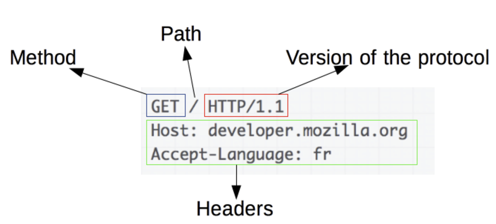
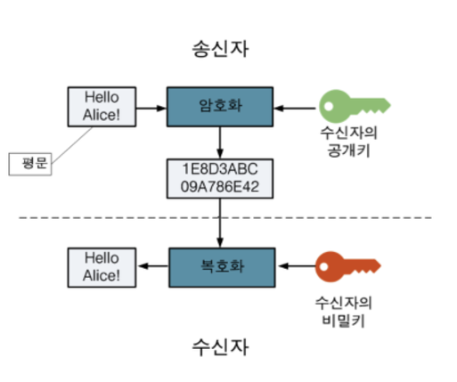
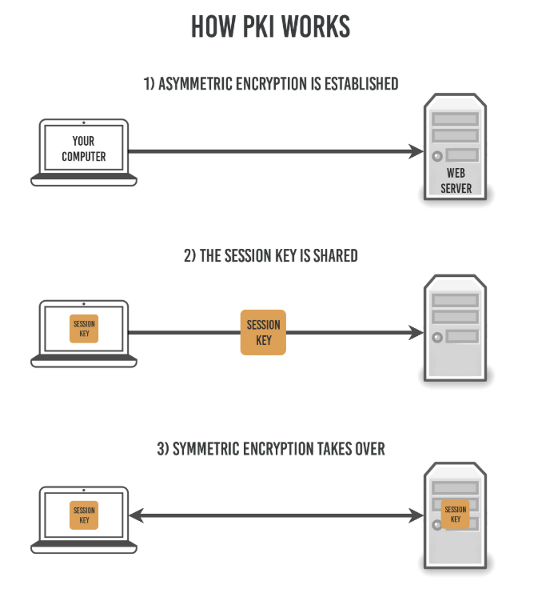
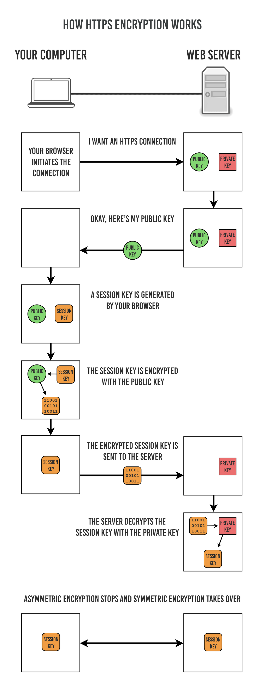
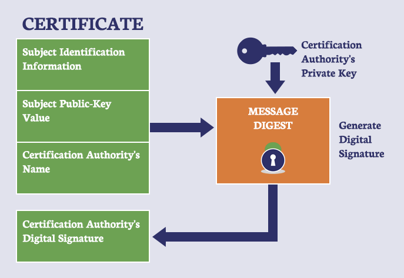
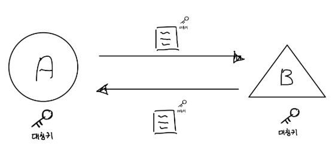
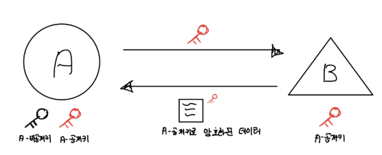

HTTP(Hyper Text Transfer Protocol)란?
HTTP란 서버/클라이언트 모델을 따라 데이터를 주고 받기 위한 프로토콜이다.
즉, HTTP는 인터넷에서 하이퍼텍스트를 교환하기 위한 통신 규약으로, 80번 포트를 사용하고 있다. 따라서 HTTP 서버가 80번 포트에서 요청을 기다리고 있으며, 클라이언트는 80번 포트로 요청을 보내게 된다.
💡 INFO
HTTP는 1989년 팀 버너스 리(Tim Berners Lee)에 의해 처음 설계되었으며, WWW(World-Wide-Web) 기반에서 세계적인 정보를 공유하는데 큰 역할을 하였다.
HTTP의 구조
HTTP는 애플리케이션 레벨의 프로토콜로 TCP/IP 위에서 작동한다. HTTP는 상태를 가지고 있지 않는 Stateless 프로토콜이며 Method, Path, Version, Headers, Body 등으로 구성된다

하지만 HTTP는 암호화가 되지 않은 평문 데이터를 전송하는 프로토콜이였기 때문에, HTTP로 비밀번호나 주민등록번호 등을 주고 받으면 제3자가 정보를 조회할 수 있었다.
그리고 이러한 문제를 해결하기 위해 HTTPS가 등장하게 되었다.
HTTPS(Hyper Text Transfer Protocol Secure)란?
HyperText Transfer Protocol over Secure Socket Layer, HTTP over TLS, HTTP over SSL, HTTP Secure 등으로 불리는 HTTPS는 HTTP에 데이터 암호화가 추가된 프로토콜이다.
HTTPS는 HTTP와 다르게 443번 포트를 사용하며, 네트워크 상에서 중간에 제3자가 정보를 볼 수 없도록 암호화를 지원하고 있다.
대칭키 암호화와 비대칭키 암호화
HTTPS는 대칭키 암호화 방식과 비대칭키 암호화 방식을 모두 사용하고 있다.
- 대칭키 암호화
- 클라이언트와 서버가 동일한 키를 사용해 암호화 / 복호화를 진행함
- 키가 노출되면 매우 위험하지만 연산 속도가 빠름
- 비대칭키 암호화
- 1개의 쌍으로 구성된 공개키와 개인키를 암호화 / 복호화 하는데 사용
- 키가 노출되어도 비교적 안전하지만 연산 속도가 느림
대칭키는 비교적 쉬운 개념이므로, 비대칭키 암호화에 대해 조금 자세히 살펴보도록 하자
- 비대칭키 암호화는 공개키 / 개인키 암호화 방식을 이용해 데이터를 암호화하고 있다.
- 공개키와 개인키는 서로를 위한 1쌍의 키이다.
- 공개키 : 모두에게 공개가능한 키
- 개인키 : 나만 가지고 알고 있어야 한다.
- 공개키와 개인키는 서로를 위한 1쌍의 키이다.
- 암호화를 공개키로 하느냐 개인키로 하느냐에 따라 얻는 효과가 다른데, 공개키와 개인키로 암호화하면 각각 다음과 같은 효과를 얻을 수 있다

- 공캐키 암호화
- 공개키로 암호화를 하면 개인키로 복호화할 수 있다.
- 개인키는 나만 알고 있으므로 나만 볼 수 있다.
- 공개키로 암호화를 하면 개인키로 복호화할 수 있다.
- 개인키 암호화
- 개인키로 암호화하면 공개키로만 복호화할 수 있다.
- 공개키는 모두에게 공개되어 있으므로, 내가 인증한 정보임을 알려 신뢰성을 보장할 수 있다.
- 개인키로 암호화하면 공개키로만 복호화할 수 있다.
HTTPS의 동작과정
- HTTPS는 대칭키 암호화와 비대칭키 암호화를 모두 사용하여 빠른 연산 속도와 안정성을 모두 얻고 있다.
- HTTPS 연결과정(Hand-Shaking)에서는 먼저 서버와 클라이언트 간에 세션 키를 교환한다.
- 여기서 세션키는 주고 받는 데이터를 암호화하기 위해 사용되는 대칭키이며, 데이터 간의 교환에는 빠른 연산 속도가 필요하므로 세션키는 대칭키로 만들어진다
- 문제는 이 세션키를 클라이언트와 서버가 어떻게 교환할 것인냐인데, 이 과정에서 비대칭키가 사용된다
- ⭐ 즉, 처음 연결을 성립하여 안전하게 세션키를 공유하는 과정에서 비대칭키가 사용되는 것이고, 이후에 데이터를 교환하는 과정에서 빠른 연산 속도를 위해 대칭키가 사용되는 것이다.

실제 HTTPS 연결 과정이 성립되는 흐름을 살펴보면 다음과 같다
- 클라이언트(브라우저)가 서버로 최초 연결 시도를 함
- 서버는 공개키(인증서)를 브라우저에 넘겨줌
- 브라우저는 인증서의 유효성을 검사하고 세션키를 발급함
인증서 유효성 검사 과정
- 인증서 구조 검사
- 형식 확인: 인증서가 X.509 표준을 따르고 있는지 확인
- 기한 확인: 인증서의 유효기간(
validFrom,validTo)이 현재 날짜와 맞는지 확인 - 도메인 확인: 인증서에 포함된 도메인 이름(CN 또는 SAN)이 브라우저가 요청한 URL과 일치하는지 확인
- 신뢰 체인 검증
- 인증서가 신뢰할 수 있는 인증 기관(CA, Certificate Authority)에 의해 발급되었는지 확인
- 브라우저는 로컬에 저장된 "루트 인증서" 목록을 참조하여, 서버의 인증서가 "신뢰 체인"에 연결되는지 확인
- 서명이 유효한지 확인
- 상위 인증 기관의 공개키로 서명(Signature)을 검증
- 서버 인증서가 위조되지 않았는지 확인
- CRL/OCSP 확인
- 인증서가 폐기되지 않았는지 확인
- CRL(Certificate Revocation List): 인증 기관이 폐기한 인증서 목록을 확인합니다.
- OCSP(Online Certificate Status Protocol): 인증 기관에 실시간으로 폐기 여부를 질의합니다.
- 인증서가 폐기되지 않았는지 확인
세션키 발급 과정
세션키는 대칭키 암호화에 사용되며, 브라우저와 서버 간 안전한 데이터 통신을 보장합니다. 세션키 발급은 대체로 다음 두 가지 방식으로 이루어집니다.
- RSA 방식
- 브라우저는 자체적으로 임의의 세션키(대칭키)를 생성
- 생성된 세션키를 서버의 공개키(인증서에 포함)로 암호화하여 서버로 전송
- 서버는 자신의 개인키를 사용하여 이 세션키를 복호화
- 결과적으로 클라이언트와 서버는 동일한 세션키를 공유
- ECDHE 방식 (PFS, Perfect Forward Secrecy 지원)
- 클라이언트와 서버가 Diffie-Hellman 알고리즘(ECDHE, Elliptic Curve Diffie-Hellman Ephemeral)을 사용하여 세션키를 협상
- 클라이언트와 서버는 각각 임의의 비밀 값을 생성
- 이를 기반으로 서로 공개 값을 교환하고, 교환한 값을 계산하여 동일한 세션키를 독립적으로 도출함
- 이 과정은 서버의 공개키로 암호화되어 전달되므로, 외부에서 도청할 수 없음
- 클라이언트와 서버가 Diffie-Hellman 알고리즘(ECDHE, Elliptic Curve Diffie-Hellman Ephemeral)을 사용하여 세션키를 협상
- 인증서 구조 검사
- 브라우저는 세션키를 보관하며 추가로 서버의 공개키로 세션키를 암호화하여 서버로 전송함
- 서버는 개인키로 암호화된 세션키를 복호화하여 세션키를 복호화하여 세션키를 얻음
- 클라이언트와 서버는 동일한 세션키를 공유하므로 데이터를 전달할 때 세션키를 암호화/복호화를 진행

HTTPS의 발급 과정
위 과정에서 추가로 살펴봐야 할 부분은 서버가 비대칭키로 발급받는 과정이다.
서버는 클라이언트와 세션키를 공유하기 위한 공개키를 생성해야 하는데, 일반적으로는 인증된 기관(Certificate Authority)에 공개키를 전송하여 인증서를 발급받는다. 자세한 과정은 다음과 같다.
- A 기업은 HTTP 기반의 애플리케이션에 HTTPS를 적용하기 위해 공개키 / 개인키를 발급함
- CA 기업에게 돈을 지불하고, 공개키를 저장하는 인증서의 발급을 요청함
- CA 기업은 CA기업의 이름, 서버의 공개키, 서버의 정보 등을 기반으로 인증서를 생성하고, CA 기업의 개인키로 암호화하여 A 기업에게 이를 제공함
- A기업은 클라이언트에게 암호화된 인증서를 제공
- 브라우저는 CA기업의 공개키를 미리 다운받아 갖고 있어, 암호화된 인증서를 복호화

인증서는 CA의 개인키로 암호화되었기 때문에, 신뢰성을 확보할 수 있고, 클라이언트는 A 기업의 공개키로 데이터를 암호화하였기 때문에 A기업만 복호화하여 원본 데이터를 얻을 수 있다.
여기서 인증서에는 A 기업의 공개키가 포함되어 있어, A 기업의 공개키라고 봐도 무방하다.
또한 브라우저에는 인증된 CA 기관의 정보들이 사전에 등록되어 있어 인증된 CA 기관의 인증서가 아닐 경우 다음과 같은 형태로 브라우저에서 보여지게 된다.
대칭키
대칭키는 말 그대로 암호화와 복호화 시 사용하는 키가 동일한 암호화 기법이다
그러기 위해서는 양쪽이 모두 같은 키를 가져야 한다는 특징이 있다.

위 그림에서 A에서 B로 데이터를 전송할 때, 대칭키로 암호화하고 이를 받은 B는 같은 키를 통해 복호화를 진행할 수 있다
그런데 이 방식에는 단점이 하나 있다. 바로 서로 같은 키를 가지기 위해 키를 주고 받아야 한다는점이다.
만약 A에서 B로, 혹은 B에서 A로 대칭키를 전달할 때, 대칭키가 탈취도면 다른 사람도 데이터를 복호화할 수 있게 된다.
이런 배경에서 나온 것이 비대칭키(공개키) 방식이다.
비대칭키(공개키)
공개키 방식은 대칭키 방식과 다르게 키가 두 개 존재한다.
a라는 키로 암호화를 했다면 b라는 키로 복호화할 수 있고, b키로 암호화하면 a키로 복호화를 할 수 있게 된다.
둘 중 하나를 공개키, 나머지 하나를 비동개키로 정하게 된다.
HTTPS는 대칭키 암호화 방식과 비대칭키 암호화 방식을 모두 사용하는 프로토콜

각 키를 이용해서 데이터를 주고 받는 순서를 알아보자
- A의 공개키를 B에게 전달
- B는 A에게 데이터를 전달하기 위해 1에서 받은 공개키를 통해 데이터를 암호화함
- A는 받은 데이터를 비공개키를 통해 복호화
A의 공개키가 탈취되어도 이를 복호화할 수 있는 것은 A의 비공개키를 통해서만 가능하기 때문에 대칭키 방식의 단점을 해결했다고 볼 수 있다.
그런데 데이터를 주고받을 때 A의 비공개키로 데이터를 암호화하는 경우도 있습니다. 이는 공개키가 탈취될 경우 데이터가 그대로 보이는 문제가 발생하는데 왜 사용되는 것일까요?
이 방식의 목적은 데이터의 보호가 목적이 아니기 때문입니다.
A에서 자신의 비공개키로 암호화된 데이터를 전달하고 이를 복호화할 수 있다면 이는 A에서 보낸 데이터임을 보장할 수 있기 때문입니다.
즉, 공개키로 복호화 가능한 경우 정보를 전달한 사람의 신원을 보장해줍니다. 이것을 전자 서명이라고 하고 SSL 통신에서 사용된다.
1. 비공개키로 암호화할 때
- 목적: 신원 증명 및 무결성 보장
- 언제 사용하는가?
- 전자 서명(Digital Signature)을 생성할 때 사용.
- 데이터가 특정 사람(A)으로부터 왔음을 증명할 때.
- 데이터가 중간에 변조되지 않았음을 보장할 때.
사용 예시:
- 전자 서명
- A가 데이터를 자신의 비공개키로 암호화(또는 해시 값 암호화)하여 서명 생성.
- 수신자는 A의 공개키로 이를 복호화하여 신원을 확인.
- SSL/TLS 통신에서 서버 인증
- 서버가 클라이언트에게 자신이 신뢰할 수 있는 주체임을 증명할 때.
- 서버의 비공개키로 암호화된 정보(예: 인증서)를 공개키로 복호화하여 신뢰성을 확인.
공개키로 암호화할 때
- 목적: 데이터의 안전한 전달
- 언제 사용하는가?
- 데이터를 수신자만 볼 수 있도록 보장할 때.
- 데이터를 안전하게 전송하며, 오직 특정 수신자가 복호화 가능하게 하고 싶을 때.
사용 예:
- 비밀 메시지 전달
- A가 B의 공개키로 데이터를 암호화.
- 암호화된 데이터는 오직 B만 자신의 비공개키로 복호화 가능.
- 중간에 누군가 데이터에 접근해도 B의 비공개키 없이는 읽을 수 없음.
- SSL/TLS 통신에서 대칭키 교환
- 클라이언트가 서버의 공개키로 대칭키를 암호화하여 전송.
- 서버는 자신의 비공개키로 이를 복호화하여 대칭키를 생성.
- 이후의 통신은 빠르고 효율적인 대칭키 암호화를 사용.
차이점 요약: 공개키 암호화 vs 비공개키 암호화
| 암호화 주체 | 사용하는 키 | 목적 | 사용 사례 |
|---|---|---|---|
| 공개키 암호화 | 수신자의 공개키 | 데이터 보호 및 안전한 전달 | 비밀 메시지 전달, 대칭키 교환 |
| 비공개키 암호화 | 발신자의 비공개키 | 신원 증명 및 무결성 보장 | 전자 서명, 신뢰 보장 |
SSL 인증서
SSL 통신에서 SSL 인증서를 사용하게 됩니다. SSL인증서에는 다음과 같은 정보가 포함되어 있습니다.
- 서비스의 정보 (인증서를 발급한 CA, 서비스의 도메인 등)
- 서버 측 공개키 (공개키의 내용, 공개키의 암호화 방법)
💡 CA?
인증서의 역할은 클라이언트가 접속한 서버가 신뢰할 수 있는 서버임을 보장하는 역할을 합니다. 이 역할을 하는 기업들이 있는데 이런 기업들을 CA(Certificate Authority)라고 합니다.
위와 같은 내용들은 CA에 의해 암호화된다.
이때 사용하는 방식이 공개키 방식입니다. CA는 자신의 CA 비공개키를 이용해 서버가 CA에게 제출한 인증서를 암호화한다.
그러면 이를 받은 클라이언트는 어떻게 CA의 비공개키로 암호화된 데이터를 복호화할 수 있을까요?
브라우저는 CA 리스트를 알고 있기 때문입니다. 이말은 브라우저는 CA 리스트와 함께 CA의 공개키를 이미 알고 있다는 얘기가 됩니다.
(추가 설명) CA의 역할과 인증서 암호화 과정
- 서버 인증 요청
- 서버(A)가 인증서를 발급받기 위해 CA에게 자신의 정보를 제출해.
- 제출하는 정보에는 서버의 공개키와 도메인 정보 등이 포함돼.
- CA의 인증서 생성 → SSL/TLS 인증서
- CA는 이 정보를 확인한 뒤, CA의 비공개키로 암호화해서 인증서를 발급해.
- 이 인증서에는 다음 정보가 포함돼:
- 서버의 공개키
- 서버의 도메인 정보
- 인증서를 발급한 CA 정보
- CA의 서명 (비공개키로 암호화된 부분)
- 클라이언트와 서버 통신
- 서버는 클라이언트(브라우저)에게 자신의 인증서를 보내. → 자신의 인증서 : SSL/TLS 인증서
- 브라우저는 인증서를 검증하기 위해 CA의 공개키를 사용해.
HTTPS 통신 과정
HTTPS는 위 대칭키 암호화 방식과 비대칭키 암호화 방식을 모두 이용합니다. 먼저 비대칭키 방식을 이용해 대칭키를 주고받고, 실제 데이터는 대칭키로 암호화/복호화를 진행해 주고받습니다.
간단하게 말했지만 실제는 좀 더 복잡합니다. 먼저 간략하게 설명하자면 handshake -> 통신 -> 통신종료과정으로 진행됩니다. 좀 더 자세히 HTTPS 통신 과정을 알아보겠습니다.
핸드쉐이크 (Hand shake)
SSL 통신은 데이터를 주고받기 전에 서버가 신원이 검증된 서버인지, 어떻게 데이터를 암호화 할지 등에 대해 핸드쉐이크 과정을 통해 확인합니다.
- Client Hello
- 먼저 클라이언트가 서버에 접속하는 단계로 시작합니다.
- 클라이언트 측에서 랜덤 데이터(대칭키 제조에 필요. 아래에서 설명)를 생성후 전달합니다.
- 클라이언트가 지원하는 암호화 방식들을 전달합니다.
- 클라이언트가 가능한 암호화 방식을 서버에 알려주기 위해서입니다.
- Server Hello
- 서버 측에서 Client Hello에 대한 응답으로 서버측 랜덤 데이터를 생성후 전달합니다.
- 서버가 선택한 클라이언트의 암호화 방식을 전달합니다.
SSL 인증서를 전달합니다.
- 인증서 복호화
- 클라이언트는 Server Hello 단계에서 넘어온 SSL 인증서를 복호화 합니다.
- 이때 SSL 인증서는 CA의 비공개키로 암호화되어 있습니다.
- SSL 인증서 자체가 CA의 비공개키로 암호화된 것이 아니라, 인증서에 포함된 "CA의 서명 부분"이 CA의 비공개키로 암호화된 것
- 브라우저는 CA리스트와 CA의 공개키를 알고 있기 때문에 이를 이용해 인증서를 복호화 합니다.
- 이때 SSL 인증서는 CA의 비공개키로 암호화되어 있습니다.
- 인증서 복호화가 성공한다면 이는 신원이 검증된 서버임을 보장하는 것입니다.
- 클라이언트는 Client Hello, Server Hello 각 단계에서 생성한 랜덤 데이터를 가지고
pre master secret이라는 키를 생성합니다.pre master secret은 임시적인 보안키입니다.
- 이 키를 서버 측에 전달하기 위해
공개키방식을 이용합니다. SSL 인증서에는 서버의 공개키가 포함되어 있기 때문에 이를 통해pre master secret키를 암호화해 전달합니다.
- 클라이언트는 Server Hello 단계에서 넘어온 SSL 인증서를 복호화 합니다.
pre master secret복호화- 서버는 자신의 비공개키를 이용해
pre master secret을 복호화합니다. - 클라이언트와 서버는 각각 자신의 pre master secret과 서버의 pre master secret을 가지고 master secret을 생성합니다.
- 이
master secret을 통해 세션키를 생성하고 세션키를 이용해 서로가 데이터를 주고받을 때암호화/복호화를 수행합니다.
- 서버는 자신의 비공개키를 이용해
- 클라이언트와 서버는 핸드쉐이크의 종료를 서로에게 알립니다
통신
통신 단계는 클라이언트와 서버가 데이터를 주고받는 단계
통신 종료
데이터의 전송이 모두 끝나면 SSL 통신이 끝났음을 서로에게 알려줍니다. 이때 master secret은 폐기